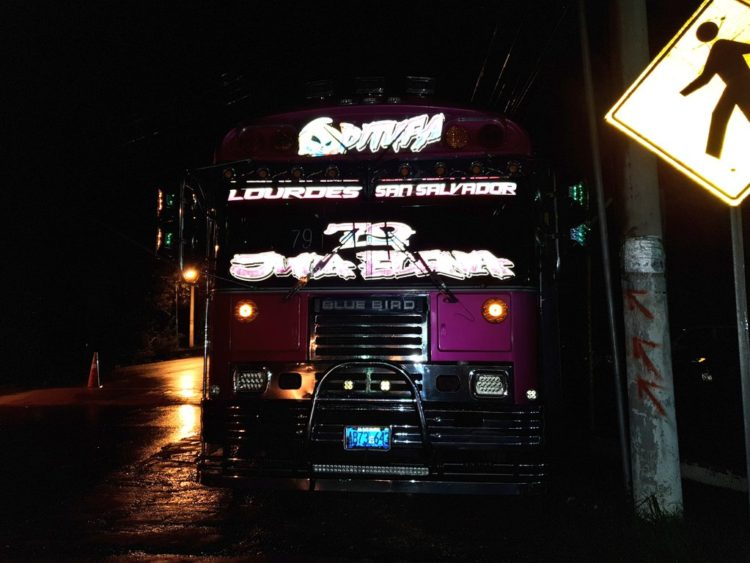

Delincuentes tirotean bus con aficionados del Alianza y lesionan a una mujer
Una seguidora del equipo Alianza FC resultó herida de bala la noche de este sábado 25 de agosto, luego de que el bus en que se transportaban miembros de la Ultra Blanca, fuera atacado a balazos por dos sujetos que se transportaban en una motocicleta.
El ataque armado ocurrió cerca del balneario Apuzunga, localizado en el kilómetro 111.5 de la carretera que de Santa Ana conduce a Metapán.
Según reporte policial, los hinchas se transportaban en el autobús placas AB: 73-643 para ver el partido entre el Alianza FC y el Isidro Metapán.
Se explicó que una de los proyectiles impactó en una de las piernas de Maritza Raquel Alarcón, de 23 años de edad, siendo llevada al hospital de Metapán donde fue intervenida quirúrgicamente y le retiraron la bala.
Miembros de la Cruz Roja Salvadoreña dijeron que el estado de salud de Alarcón era estable y que este mismo día sería dada de alta.
Las autoridades dijeron desconocer los móviles del ataque armado y pese a que agentes de la Policía Nacional Civil montaron un operativo en la zona, no se reportaron capturas.